stable-worldmodel: A Platform for Reproducible World Modeling Research and Evaluation
stable-worldmodel is an open-source platform for world-model research: one library to collect data, train a world model, and evaluate it by planning, across about 150 environments, over 100 of which are Atari games. Its main idea is factors of variation: colours, lighting, shapes, masses and dynamics that can be changed one at a time. They make it possible to study a world model under controlled changes: how well it generalises, how robust it is, or how it copes when the environment shifts over time.

This post is a practical reference for anyone looking for a benchmark to test a new world model. It covers the main environment families: what each task is, what the model sees and does, and what counts as success.
How it works
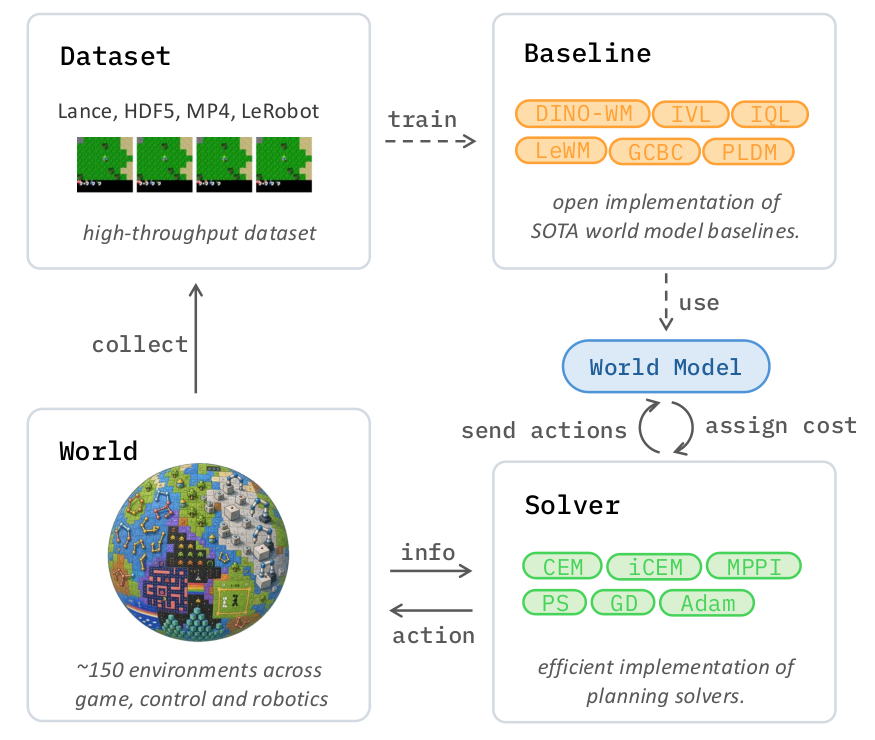
The figure shows the full loop:
- Collect. A World wraps an environment, runs many copies in parallel and records trajectories into a dataset (Lance, HDF5, MP4 or LeRobot).
- Train. The dataset trains a world model: your own, or one of the provided baselines (DINO-WM, LeWM, PLDM, and the goal-conditioned methods GCBC, IQL and IVL).
- Plan. At test time a solver proposes actions, the world model assigns each a cost, and the solver refines them. The chosen action goes to the World, which sends back new information, and the loop repeats.
To get started: a minimal example, the data formats, the ready-made baselines, and the solvers that do the planning.
pip install 'stable-worldmodel[all]' # training, environments and data
Note: this differs slightly from the quickstart in their GitHub README. I ran it and fixed two issues:
Worldneeds animage_shape, andcollectandload_datasetresolve relative paths differently, so both now use the same absolute path.
from pathlib import Path
import stable_worldmodel as swm
from stable_worldmodel.policy import WorldModelPolicy, PlanConfig
from stable_worldmodel.planning import CEMSolver
# 1. Collect a dataset with any policy
world = swm.World("swm/PushT-v1", num_envs=8, image_shape=(224, 224))
world.set_policy(your_expert_policy)
path = Path("data/pusht_demo.lance").absolute()
world.collect(path, episodes=100, seed=0)
# 2. Load it for training: windows of 16 consecutive steps
dataset = swm.data.load_dataset(path, num_steps=16)
world_model = ... # your model
# 3. Evaluate by planning with model-predictive control
solver = CEMSolver(cost=world_model, num_samples=300)
policy = WorldModelPolicy(
solver=solver,
config=PlanConfig(horizon=10, receding_horizon=5),
)
world.set_policy(policy)
results = world.evaluate(episodes=50)
print(f"Success Rate: {results['success_rate']:.1f}%")
| Format | Stored as | Best for |
|---|---|---|
lance (default) | a LanceDB table | fast indexed reads, appending; about 4,800 samples/s locally |
hdf5 | one .h5 file | a single portable file |
folder | .npz columns and one JPEG per step | inspecting data by hand |
video | .npz columns and one MP4 per episode | long episodes, compact storage |
lance_video | a LanceDB table with one MP4 per episode | Lance's fast reads, video's compact storage |
lerobot | lerobot://<repo_id> | reading LeRobot Hub datasets |
Convert between them with swm.data.convert(...).
Ready-made baselines, so new models can be compared on equal terms:
- Latent world models: DINO-WM, PLDM, LeWorldModel, TD-MPC2.
- Goal-conditioned RL: behaviour cloning (GCBC), implicit Q-learning (GCIQL) and implicit V-learning (GCIVL).
A solver searches for the action sequence whose predicted outcome, under the world model, has the lowest cost, for example the distance to a goal image. There are two families.
Sampling-based: try many random action sequences, score them all with the world model, and use the best ones to guide the next round. No gradients are needed.
- CEM (cross-entropy method), the default in the quickstart and the one LeWM and DINO-WM use: sample action sequences from a Gaussian, keep the best few, fit a new Gaussian to them, and repeat.
- MPPI: instead of keeping only the best few, average all the samples, weighting each one by how low its cost is. PLDM uses it.
- iCEM and predictive sampling are variants of these; a categorical CEM handles discrete actions.
Gradient-based: start from one action sequence and improve it by following the gradient of the cost back through the world model (plain gradient descent, a projected version that keeps actions in range, or Adam). This needs a differentiable world model and can get stuck in a local minimum. A Lagrangian solver adds constraints on top.
In code, planning is wrapped in a policy: WorldModelPolicy combines a solver and a world model, so a trained model is evaluated in the World like any other policy. Whatever the solver, the policy executes the first few planned actions, then plans again from the new observation: model-predictive control.
The environments
Here are the main benchmarks in the library. For each one there is a description of the task, what the model observes, how it acts, what counts as reaching the goal, and which factors can be varied.
A round agent pushes a T-shaped block until it matches a target position and orientation. The agent can only push, so it has to work around the block, using contact to both move and rotate it. 2D rigid-body physics (Pymunk), control at 10 Hz.
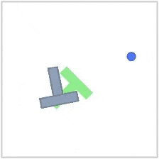
A point agent must reach a target in the other room. The two rooms are separated by a wall with one to three doors, so the agent has to find a door and plan its route through it. 2D movement, with collisions against the walls only.
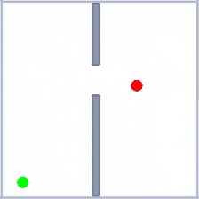
A point agent must reach a target in a single open room, bounded only by its outer walls. The room is split into a grid of zones (2 × 2 by default), and each zone has its own fixed push. So the same action can move the agent faster, slower or off to the side, depending on the zone it is in, and the world model has to learn dynamics that change with position. The push is a 2D offset of up to 4 px per step along each axis, added to every move the agent makes inside the zone.
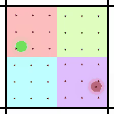
A robot arm picks, places, swaps and stacks cubes to reach a target arrangement. Comes in five sizes, from 1 to 8 cubes, each with five evaluation tasks of growing difficulty. A standard 3D manipulation test for world models.
(q₁ … q₆)arm joint velocities
(q̇₁ … q̇₆)end-effector position
(x, y, z)end-effector yaw
(cos ψ, sin ψ)gripper openinggripper contactfor each cube:position (x, y, z)rotation (quaternion)yaw (cos, sin)
(dx, dy, dz)yaw change (dψ)gripper open/close (g)each between −1 and 1
for each cube
of its target
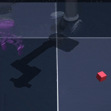
A robot arm works in a scene with a cube, a drawer, a window, and two buttons that lock and unlock the drawer and the window. Tasks need several steps in the right order, such as unlocking the drawer before opening it. Five tasks: open, unlock and lock, rearrange (medium), put the cube in the drawer, rearrange (hard).
(q₁ … q₆)arm joint velocities
(q̇₁ … q̇₆)end-effector position
(x, y, z)end-effector yaw
(cos ψ, sin ψ)gripper openinggripper contactcube position,
rotation and yaw2 button states
(locked or not)drawer position
and velocitywindow position
and velocity
(dx, dy, dz)yaw change (dψ)gripper open/close (g)each between −1 and 1
of all objects
within 0.04 of targetsboth buttons in their
target state
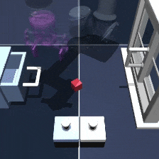
Locomotion through mazes of different layouts (arena, medium, large, giant, teleport), with a choice of body: a point mass, an ant, or a humanoid. A variant asks the agent to push a ball to the goal instead.
force (ax, ay)ant: 8 joint torqueshumanoid:
21 joint torques
(x, y) in the maze
or 0.5 (ant, humanoid)
of the goal
The standard MuJoCo control suite, rendered from pixels. Each body comes with its own set of tasks: running, hopping, balancing, reaching… Actions are repeated for 2 simulation steps.
and velocitiestask-specific readingsflattened into
one vector
actuated jointeach between −1 and 1count per body below
objectiverun, hop, balance,
reach…
| Body | Torques |
|---|---|
| Cartpole, Pendulum, Acrobot | 1 |
| Reacher, Ball in cup, Finger | 2 |
| Hopper | 4 |
| Manipulator | 5 |
| Cheetah, Walker | 6 |
| Quadruped | 12 |
| Humanoid | 21 |
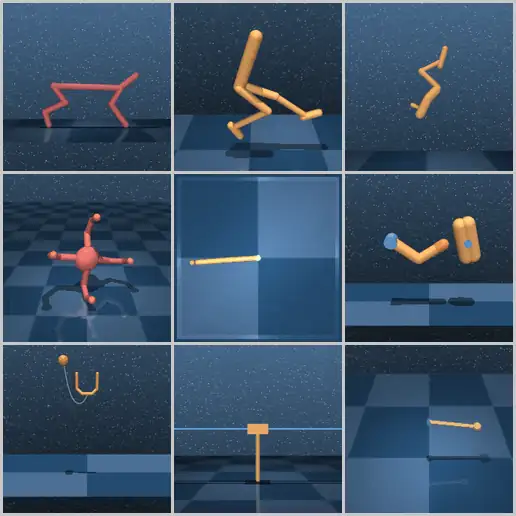
Five small control problems, each rendered as an image and extended with factors of variation.
A pole is hinged on a cart that moves along a track. By pushing the cart left or right, the agent keeps the pole upright.
of uprightcart within 2.4
of the centrefor up to 500 steps
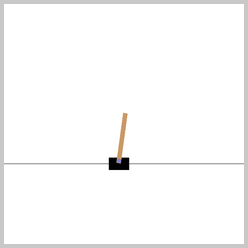
A car sits in a valley between two hills, and its engine is too weak to drive straight up. It has to rock back and forth to build momentum and reach the flag on the right hill.
none or rightcontinuous: force
between −1 and 1
(0.45 continuous)within 200 steps
(999 continuous)
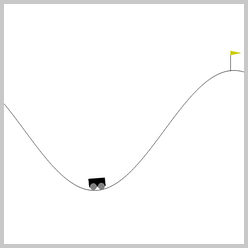
Two links hang from a fixed pivot, and only the joint between them is driven. The agent swings the arm until its tip rises above a line.
both joint anglesboth joint velocities
on the middle joint
above the line
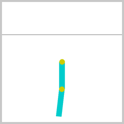
A pendulum hangs from a pivot. The agent applies torque to swing it up and keep it balanced upright.
−2 and 2
by closeness to upright
and torque usedover 200 steps
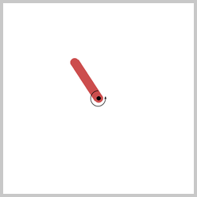
A point moves inside a 5 × 5 square that holds 4 to 6 random rectangular walls, and has to reach a goal. Moves that would hit a wall are blocked.
−0.2 and 0.2
goal radius(0.2 by default)
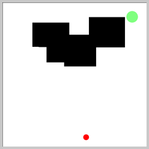
A Fetch robot arm moves a block, or just its gripper, to a goal position. Four tasks, each in three versions: sparse reward, dense reward (Dense), and dictionary observations (Dict).
(x, y, z)gripper finger positionsgripper velocitywith an object:positionposition relative
to the gripperrotationvelocitiesthen the goal (x, y, z)
(dx, dy, dz)gripper open/close (g)each between −1 and 1
(x, y, z)
within 5 cm50 steps per episode
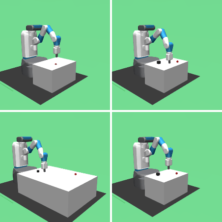
A 2D, Minecraft-like world, seen from above. The agent gathers resources, crafts tools, fights creatures and has to eat, drink and sleep to survive. It only sees the area around it. There are two versions: Classic, a single overworld map, and Full, which adds dungeons on several floors, ranged combat and magic. Both come with pixel or symbolic observations, and both run on JAX.
stats as one vectorClassic: 1,345 valuesFull: 8,268 values
(move, do, sleep,
place, make…)Full: one of 43
(adds combat, magic,
floor changes)
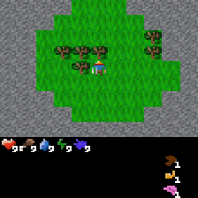
The Arcade Learning Environment: classic Atari games with visual wrappers for factors of variation.
game screen
fire, combinations
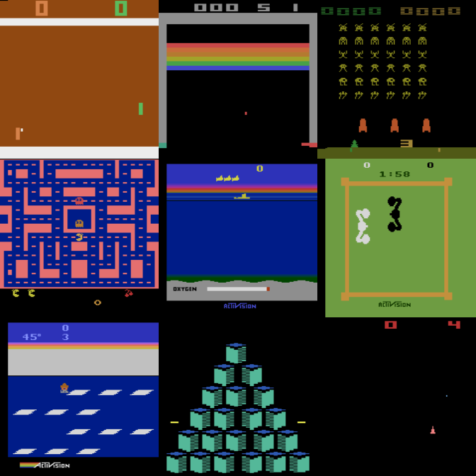
A physics-based rocket (PyFlyt) must land upright on a landing pad without running out of fuel or hitting too hard. Its action has seven continuous components, and its dynamics are unforgiving.
(ωx, ωy, ωz)attitude (quaternion
by default)velocity (vx, vy, vz)position (x, y, z)previous actionauxiliary readingspad contact (yes / no)
nearly uprightangular speed below 5speed below 4
Factors of variation
Each environment comes with a set of factors that can be changed independently: colours, sizes and shapes of objects, lighting, camera angle, background, and physical properties such as mass and friction. A model trained under default settings can then be tested under a controlled shift, one factor at a time, or several together.
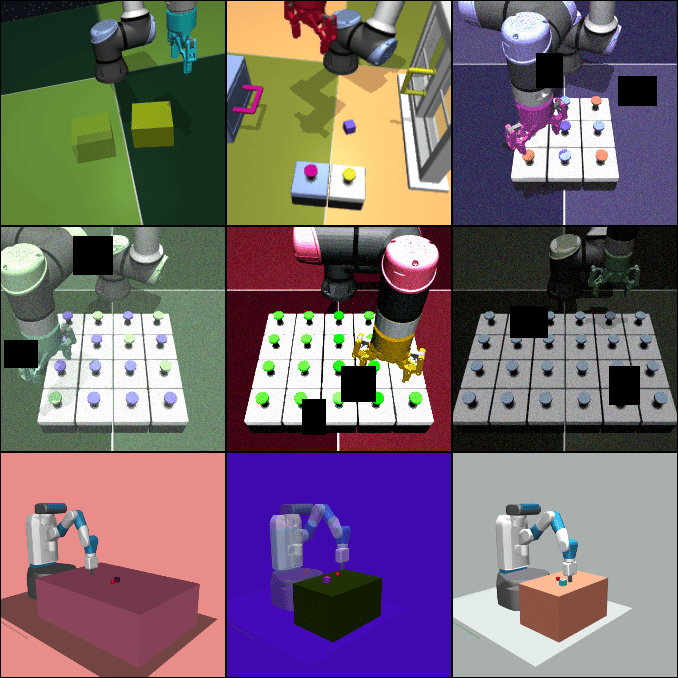
On top of these, 11 visual wrappers (blur, noise, colour jitter, occlusion and others) can be applied to any environment, changing only the image the model sees. They are the only source of variation for Atari and Craftax, whose simulators cannot be changed from the inside.
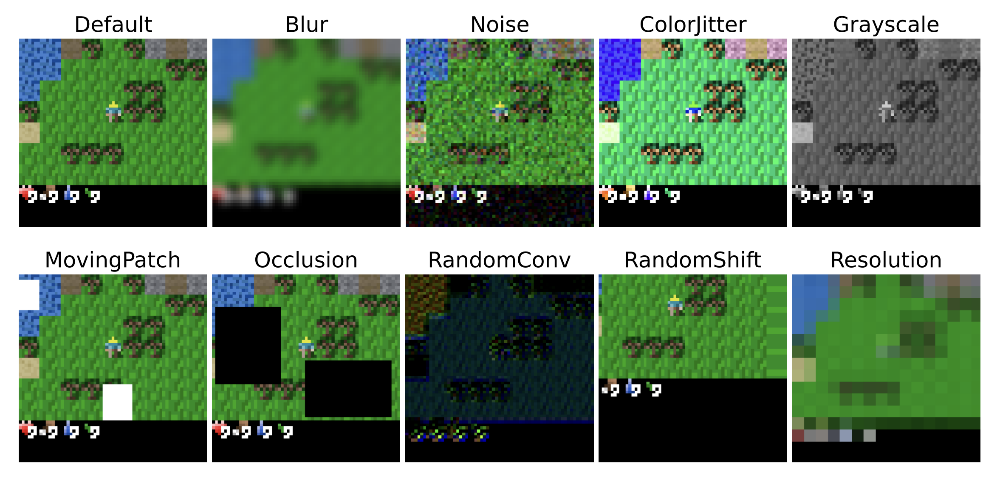
By default, only a few factors are randomised at every reset, usually the start and goal positions; the rest stay at their default values. Other factors are switched on per reset with the variation option, and can be set to exact values with variation_values:
import numpy as np
import stable_worldmodel as swm
world = swm.World("swm/PushT-v1", num_envs=1, image_shape=(224, 224))
# Randomise only these factors at this reset
world.reset(seed=0, options={"variation": ["agent.color", "block.color"]})
# Randomise every factor
world.reset(seed=0, options={"variation": ["all"]})
# Set a factor to an exact value
world.reset(seed=0, options={
"variation": ["agent.color"],
"variation_values": {"agent.color": np.array([255, 0, 0], dtype=np.uint8)},
})
To list every factor of an environment, with its type, range and default:
swm fovs swm/PushT-v1
Summary
stable-worldmodel puts the whole world-model workflow in one library: collecting data in about 150 environments, training with ready-made baselines, and evaluating by planning with a choice of solvers. Its factors of variation and visual wrappers make it possible to change one thing at a time, colours, shapes, physics or the image itself, and see how a world model copes.
One thing I think would be nice to have is a unified, live leaderboard, as results for world models are currently spread across papers and docs, each with its own budget and settings. As interest in world models grows and more and more researchers start working on them, the lack of a live leaderboard makes it harder to see where the field stands.
I hope that in the near future we will see such live leaderboards, or platforms that track the state of the art in world models, keeping everything in one place and making it much easier to navigate. Maybe I will try to build one myself, maybe not, who knows?! 😄